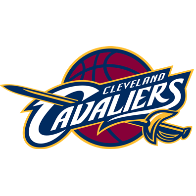
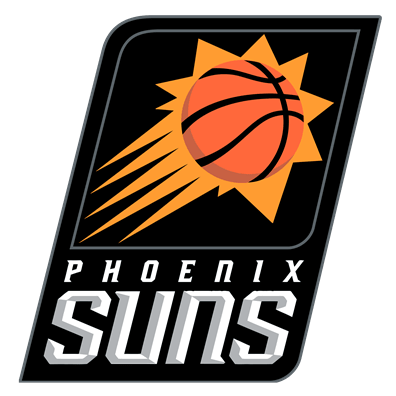

Cleveland Cavaliers - Phoenix Suns MAÇINA BAHİS YAP
Cleveland Cavaliers

Maç Sonucu
1
0
2
Çifte Şans
1x2
1x0
2x1
Alt / Üst
Alt
Üst
Phoenix Suns

Canlı
YAKINDA
Tümü
95 Maç
19 Maç
19 Maç
15 Maç
15 Maç
9 Maç
23 Maç
18:25 /
Voleybol
SpikeVolleyball. International Cup. Bayanlar
Rusya (Bayanlar)
Bulgaristan (Bayanlar)
18:23 /
Masa Tenisi
Masters
Valeriy Gorelov
Roman Romanov
18:18 /
Buz Hokeyi
NHL 23. Cyber League
Tampa Bay Lightning (cyber)
Washington Capitals (cyber)
18:17 /
Masa Tenisi
Masters
Sergey Shpak
Maxim Evitch
18:15 /
Masa Tenisi
Masters
Artur Krawczyk
Adrian Kostewicz
18:15 /
Masa Tenisi
TSC Pro
Kristina Shabashkina
Kirill Neustroev
18:15 /
Masa Tenisi
TSC Pro
Vitaly Khomutetskiy (RUS)
Victor Yaichkov
18:10 /
Masa Tenisi
Masters
Andrey Gusev
Ilya Saygin
18:10 /
Buz Hokeyi
3HL League
Galaxy Warriors
Bad Сompany
18:10 /
Buz Hokeyi
Rusya. MNHL
Sheriff
Gladiators
18:07 /
Masa Tenisi
Masters
Evgeny Kroshinskiy
Vadim Osadchiy
18:07 /
Masa Tenisi
Masters
Zijie Ye
Miguel Rodriguez Moreno
18:05 /
Voleybol
Diamond Cup. Bayanlar
Izumrud (Bayanlar)
Aquamarine (Bayanlar)
18:05 /
Masa Tenisi
Masters
Shejil Peter
Piotr Krukar
18:05 /
Buz Hokeyi
RHL
Legion Barnaul
Locomotive Orenburg
18:05 /
Buz Hokeyi
Rusya. MNHL
Skyhawks
Blood Razors
18:03 /
Basketbol
IPBL. Space Division. Bayanlar
Mercury (Bayanlar)
Storm (Bayanlar)
18:01 /
Masa Tenisi
Masters. Bayanlar
Wiktoria Zaniewska
Agata Grabowska
18:00 /
e-Sporlar
CS 2. ESEA Advanced. Europe
GODSENT
mouz NXT
18:00 /
Buz Hokeyi
IIHF Dünya Şampiyonası. 2024. Division III. Bayanlar
Ukrayna (Bayanlar)
Litvanya (Bayanlar)
18:00 /
Buz Hokeyi
3HL League
Golden Knights
Black Angels
18:00 /
Basketbol
Rusya Şampiyonası. Büyük Lig. Bayanlar
Vologzhanka (Bayanlar)
CSU Cheboksary (Bayanlar)
18:00 /
Basketbol
Beyaz Rusya Şampiyonası. Premier Lig. Bayanlar
Gomelskiye Rysi II (Bayanlar)
RGUOR Minsk (Bayanlar)
18:00 /
Basketbol
Vietnam Şampiyonası U23. 3x3
Ha Noi II 3x3 U23
Ba Ria Vung Tau 3x3 U23
18:00 /
Basketbol
IPBL. Pro Division. Bayanlar
St. Petersburg (Bayanlar)
Tyumen (Bayanlar)
18:00 /
Voleybol
Afrika Oyunları. Bayanlar
Kenya (Bayanlar)
Seychelles (Bayanlar)
17:59 /
Masa Tenisi
Masters
Egor Kravchuk
Alexey Zhukovsky
17:57 /
Masa Tenisi
Masters
Anton Fomchenko (RUS)
Stanislav Lykov
17:56 /
Futbol
Kulüpler Arası Dostluk Maçları
Rodina-M
Ural II
17:55 /
Masa Tenisi
Masters
Matvey Ryazantsev (RUS)
Daniil Sokolov (RUS)
17:55 /
Buz Hokeyi
RHL
Elektronik Yaroslavl
Atlant Orel
17:55 /
Buz Hokeyi
Cyber NHL 22
Dallas Stars (Arsa_6379)
Colorado Avalanche (Fast_7890)
17:55 /
Basketbol
IPBL. Pro Division
Omsk
Barnaul
17:52 /
Basketbol
Table Basketball League
Sırbistan (TBL)
Uruguay (TBL)
17:50 /
Masa Tenisi
Masters
Damian Rybak
Tomasz Trzaskowski
17:50 /
Masa Tenisi
Masters
Jakub Wojewoda
Adrian Kucharzyk
17:50 /
Masa Tenisi
Masters
Pavel Galanov (RUS)
Mikhail Leonov
17:50 /
Masa Tenisi
Masters
Pavel Meleshko
Valery Kataev
17:50 /
Masa Tenisi
Masters
Sergey Sakovich
Dmitriy Gorodkov
17:50 /
Basketbol
IPBL. Prime Division. Bayanlar
Lady bears (Bayanlar)
Bisons (Bayanlar)
17:45 /
Buz Hokeyi
Beyaz Rusya Şampiyonası. Extraliga
Yunost Minsk
Metallurg Zhlobin
17:40 /
Basketbol
IPBL. Prime Division
Motor Cruise
Rhinos
17:35 /
Basketbol
Rocket League. Bayanlar
Ducks (Bayanlar)
Flamingos (Bayanlar)
17:35 /
Basketbol
NBA 2K23. Cyber Euro League
Crvena Zvezda (cyber)
Maccabi (cyber)
17:31 /
Basketbol
Rocket League
Mariners (Blue)
Raiders (Red)
17:30 /
Voleybol
Capital Challenge Cup. Bayanlar
Served Hot (Bayanlar)
Angry Birds (Bayanlar)
17:30 /
e-Sporlar
CS 2. Intel Extreme Masters Dallas 2024: Europe Closed Qualifier
ENCE
B8
17:30 /
e-Sporlar
CS 2. Intel Extreme Masters Dallas 2024: Europe Closed Qualifier
Metizport
Apeks
17:30 /
Futbol
Bosna-Hersek Kupası
Sloga Doboj
NK Posušje
17:30 /
Basketbol
WNCAA
Rider Broncs (Bayanlar)
Iona Gaels (Bayanlar)
17:20 /
Buz Hokeyi
Dream League
Finlandiya (Amatörler)
İsveç (Amatörler)
17:18 /
Buz Hokeyi
NHL 23. Cyber League
Pittsburgh Penguins (cyber)
Nashville Predators (cyber)
17:15 /
e-Sporlar
Valorant. Challengers League Turkey Birlik
SuperMassive
Istanbul Wild Cats
17:15 /
Basketbol
VTB United Ligi
Uralmash
MBA Moskova
17:10 /
Futbol
1X Media Football League
Osh City
Sonic
17:07 /
e-Sporlar
CS 2. Eternity League
Team Boohoo
Eiphy Esports
17:07 /
Basketbol
Çin. CDBL
Hubei Unicorns
Hebei Neptune's
17:00 /
Voleybol
Polonya Şampiyonası. 1.Lig. Bayanlar
MKS SAN-Pajda Jaroslaw (Bayanlar)
KS ASBL Pila (Bayanlar)
17:00 /
Voleybol
Azerbaycan Şampiyonası. Süper Lig. Bayanlar
Azerrail Baku (Bayanlar)
Gence (Bayanlar)
17:00 /
Voleybol
Orange Cup
Volna (4х4)
Uran (4х4)
17:00 /
Voleybol
Ural League. Bayanlar
Skyline (Bayanlar)
Ural Liberty (Bayanlar)
17:00 /
e-Sporlar
CS 2. RES Latin American Series #2
Case Esports
LA RUGONETA
17:00 /
Buz Hokeyi
Rusya Şampiyonası. VHL
Rubin Tümen
Sokol Krasnoyarsk
17:00 /
Buz Hokeyi
Rusya Şampiyonası. VHL
Yugra
Khimik Voskresensk
17:00 /
Basketbol
Kazakistan Şampiyonası. Bayanlar
Tomiris Almaty (Bayanlar)
Turan (Bayanlar)
17:00 /
Basketbol
Ukrayna. LBL
Omega Vyshgorod
High-Tech
16:50 /
Voleybol
Dünya Amatörler Ligi. Bayanlar
Turkish Wizards (Bayanlar)
Argentinian Suns (Bayanlar)
16:45 /
e-Sporlar
Dota 2. Elite League. Western Europe Closed Qualifier
rest farmers
GHOSTIKLENOVO
16:40 /
Voleybol
Ural League 2
Ural Legion
Atlant
16:30 /
Buz Hokeyi
Rusya Şampiyonası. VHL
Zauralie Kurgan
Neftyanik Almetyevsk
16:30 /
Buz Hokeyi
МHL
Avto Yekaterinburg
Belye Medvedi
16:28 /
e-Sporlar
Dota 2. Ultras Dota Pro
Ghost Sheep
Eye Gaming
16:20 /
e-Sporlar
Dota 2. Ultras Dota Pro
Rabbits of Revenge
Business Club
16:00 /
e-Sporlar
CS 2. Elisa Invitational Spring 2024 Contenders
JANO Esports
ex-ENEIDA
15:52 /
e-Sporlar
League of Legends. European Circuit
Shadow Garden
Aether Catalyst
14:30 /
Voleybol
CBV 23. Duo Masters
Kanada
Rusya
13:50 /
Voleybol
CBV 23. Duo Masters
ABD
Hollanda
Tümü
19 Maç
01:00 /
Tenis
ATP Indian Wells
T.Fritz
S.Baez
02:30 /
Basketbol
NBA
Cleveland Cavaliers
Phoenix Suns
04:00 /
Basketbol
NBA
Denver Nuggets
Toronto Raptors
04:00 /
Tenis
ATP Indian Wells
N.Djokovic
L.Nardi
06:00 /
Tenis
ATP Indian Wells
D.Medvedev
S.Korda
06:30 /
Basketbol
NCAA
Gonzaga
San Francisco
20:00 /
Basketbol
FIBA Şampiyonlar Ligi
Galatasaray Ekmas
Ludwigsburg
20:00 /
Basketbol
Basketbol Afrika Ligi
Cape Town
FUS Rabat
22:00 /
Voleybol
CEV Kadinlar Şampiyonlar Ligi
Vero Volley Monza
Fenerbahçe Opet
22:00 /
Futbol
AFC Şampiyonlar Ligi
Al Ittihad
Al Hilal
23:00 /
Futbol
UEFA Şampiyonlar Ligi
Arsenal
Porto
23:00 /
Futbol
UEFA Şampiyonlar Ligi
Barcelona
Napoli